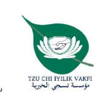
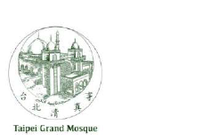

عمل إنساني في غزة يقوم على التعاون والثقة والمسؤولية المشتركة.
مبادرات إنسانية وتعليمية
تتواصل مبادراتنا الإنسانية والتعليمية في قطاع غزة بدعم وتعاون بين مؤسسة تسجي الخيرية، مدرسة المناهل الدولية، ومسجد تايبيه الكبير.
نعمل معًا لخدمة أهلنا في غزة بكرامة ورحمة، والمساهمة في دعم الأسر والأطفال والمجتمع من خلال المبادرات الإنسانية والتعليمية.
ثلاث جهات داعمة... ورسالة واحدة: الوقوف إلى جانب أهل غزة. 💚
تابعوا أثر العمل في غزة